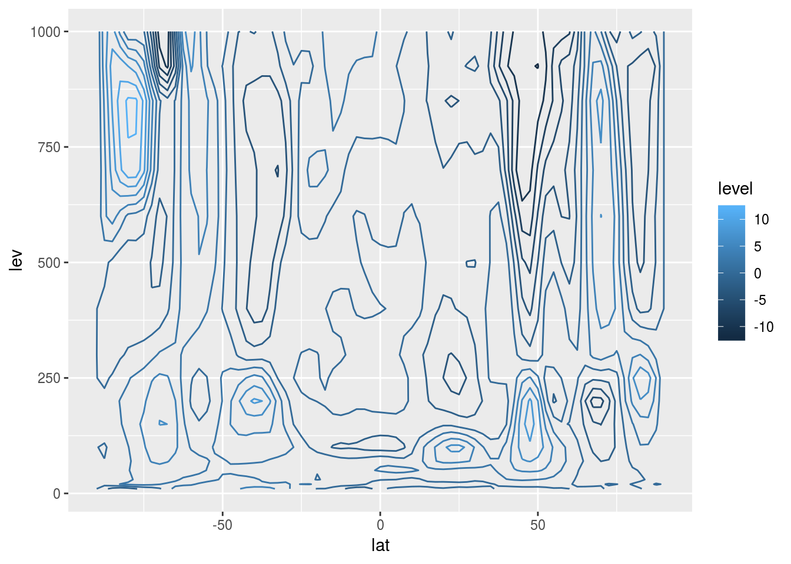
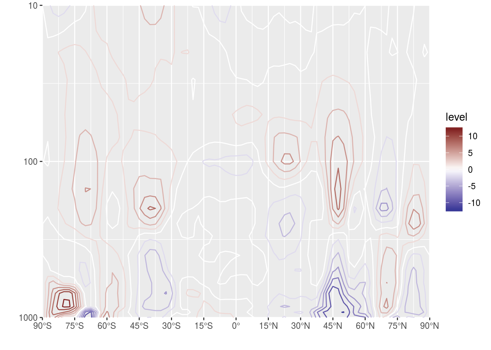
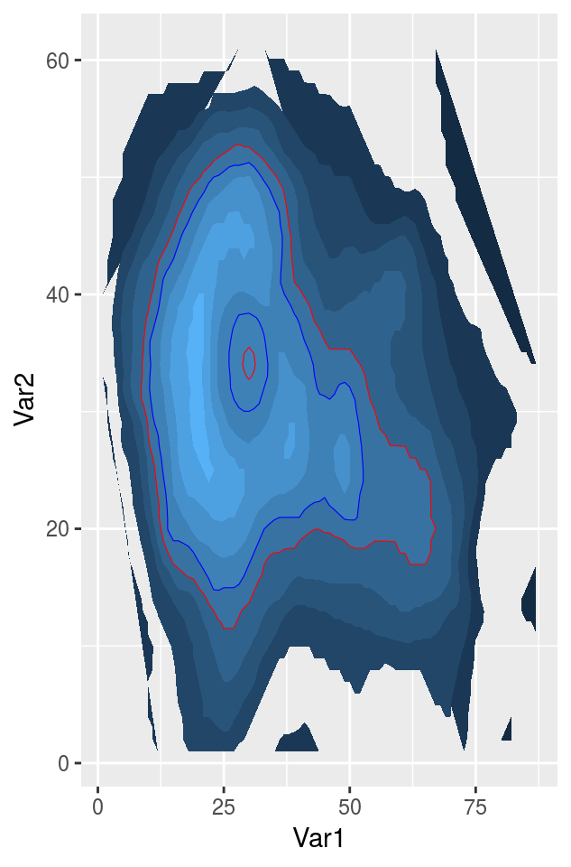
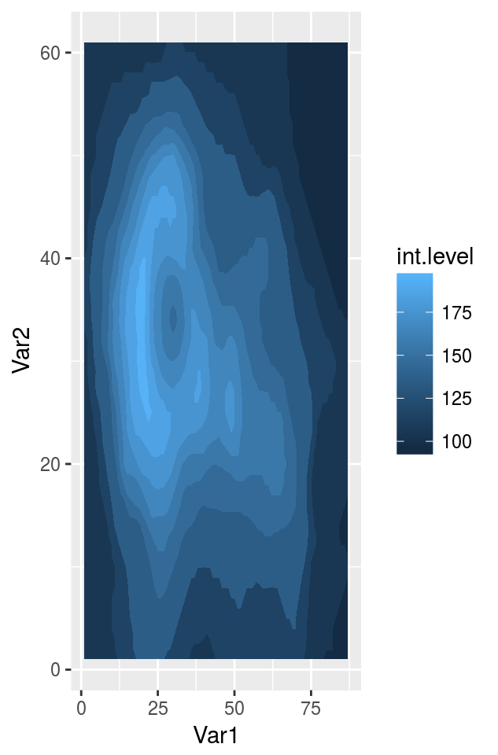
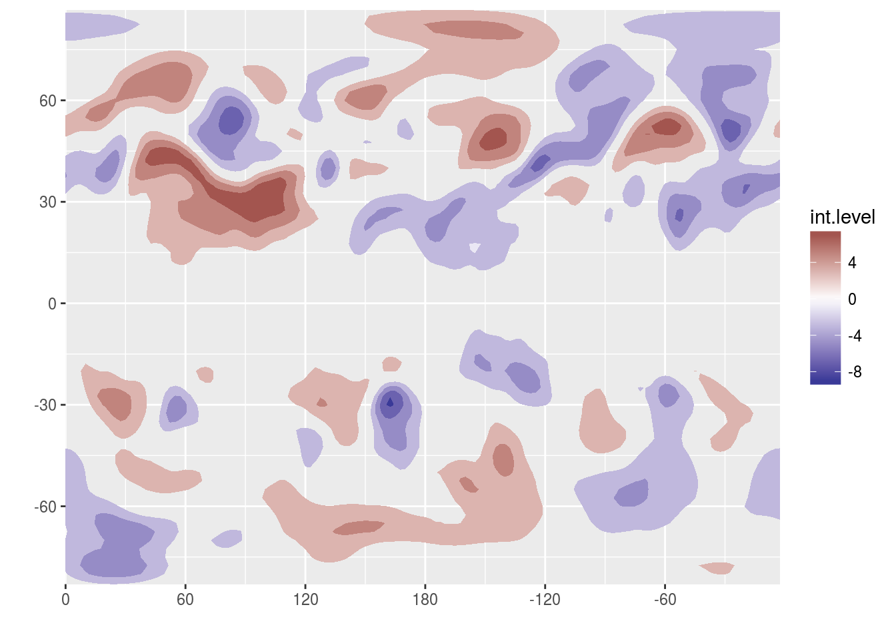
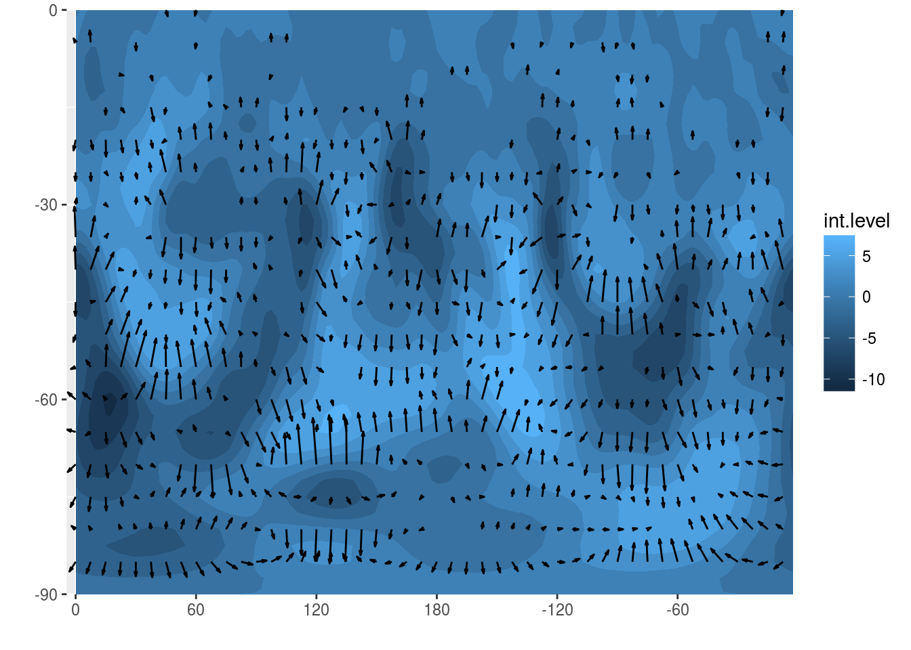
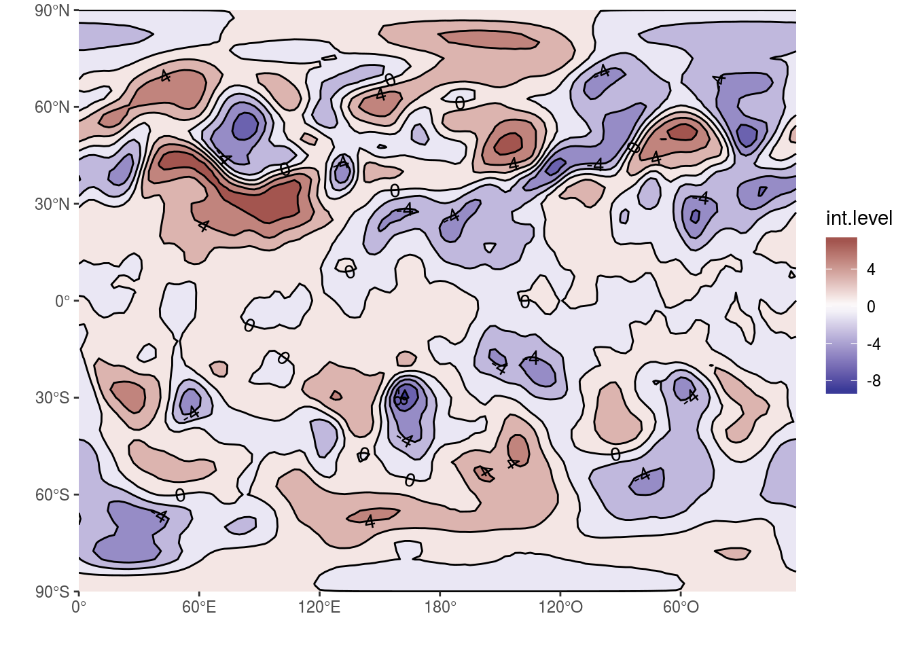
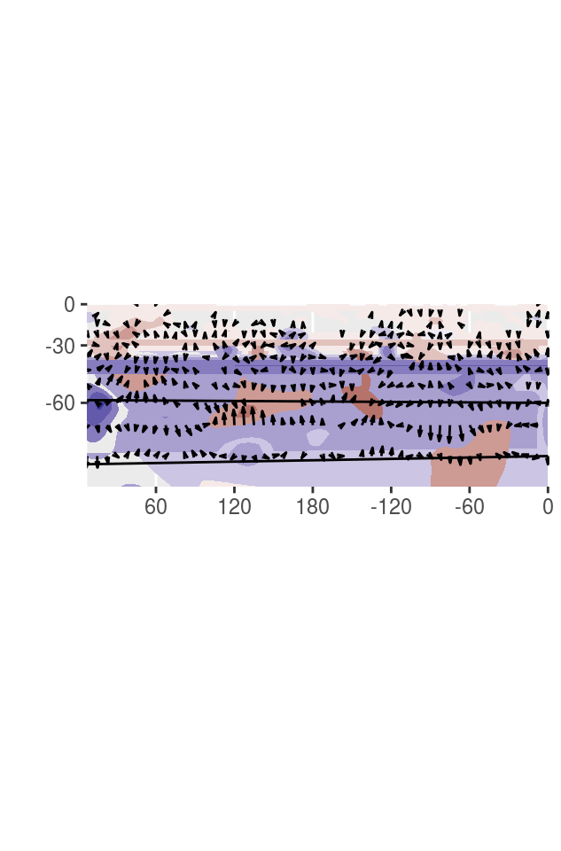
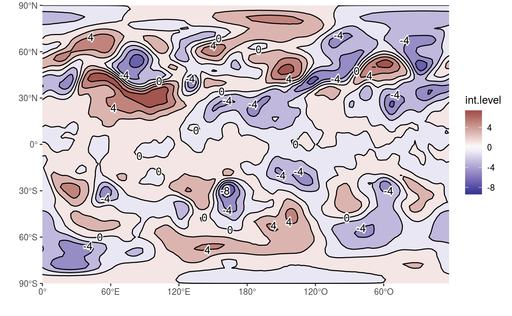

Visualization tools
Elio Campitelli
2017-11-18
One of the “conceptual branches” of metR is the visualization tools. These are a set of functions that interface with ggplot2 for easier and better plotting.
Scales
Many meteorological fields are defined in a longitude×latitude×level grid, so metR includes scales for each dimension. These are glorified wrapers around scale_*_continuous() with sensible defaults and, in the case of scale_*_level(), the implementation of reverselog_trans().
There’s also scale_*_divergent() which are wrapers around scale_*_gradient2() but with sane default colors for positive and negative values -particularily useful for plotting anomaly values.
To see how this scales work, let’s visualize the vertical distribution of temperature anomalies from the zonal mean.
library(metR)
library(ggplot2)
library(data.table)
nceptemperature <- copy(nceptemperature)
nceptemperature[, air.z := Anomaly(air), by = .(lat, lev)]
# Plot made with base ggplot
g <- ggplot(nceptemperature[lon %~% 180], aes(lat, lev, z = air.z)) +
geom_contour(aes(color = ..level..))
g
While this is fine, since pressure levels are roughly proportional to \(\mathrm{e}^{-z}\) in meteorology we usually plot the vertical coordinate as \(-\log(p)\). However, while ggplot2 has scale_y_log10() and scale_y_reverse(), they don’t work together. metR defines a new transformation reverselog_trans() that can be used with any scale but that is the default for scale_*_level().
On the other hand, scale_*_latitude() (and scale_*_longitude()) not only sets expand to c(0, 0), but also has a ticks argument that specifies the spacing of breaks.
These scales default to printing no label, since usually the dimensions are understood by the shape of the plot.
g +
scale_y_level() +
scale_x_latitude(ticks = 15) +
scale_color_divergent()
Note: scale_*_longitude() (currently) assumes the data goes from 0° to 360° but puts labels between -180° and 180°. This very idiosyncratic choice stems from the fact that model output is usually in the [0; 360) range but it’s easier to read maps in the (-180; 180] range. In the futre this may change.
Geoms and stats
metR implements one geom and one stat.
stat_contour_fill()
In ggplot2, the ‘canonical’ way to get filled contours is by using stat_contour() with a polygon geom and mapping fill to level. This has tree important limitations.
It doesn’t work well for contours that end at the edges
External contours sometimes hide internal ones (small red contour in the figure)
There’s no distinction between contours with the same level but different internal values (blue contours in the figure)
stat_contour_fill() makes some adjustments to the data and computes an aditional variable int.level (which is de defautl mapping for the fill aesthetic) that solve these problems.
breaks = seq(100, 200, by = 10)
ggplot(melt(volcano), aes(Var1, Var2, z = value)) +
stat_contour(aes(fill = ..level..), geom = "polygon", breaks = breaks) +
geom_contour(color = "red", size = 0.2, breaks = 150) +
geom_contour(color = "blue", size = 0.2, breaks = 160)
ggplot(melt(volcano), aes(Var1, Var2, z = value)) +
stat_contour_fill(breaks = breaks)
Neat, hu? :D It’s important to note that this stat currently only works with rectangular grids and does not play well with missing values.
We can apply this to a more realistic dataset
g <- ggplot(nceptemperature[lev == 300], aes(lon, lat, z = air.z)) +
stat_contour_fill(exclude = 0) +
scale_fill_divergent() +
scale_x_longitude() +
scale_y_latitude()
g
geom_vector
Plotting arrows can be a pain, so geom_vector() is a parametrization of geom_segment() by location and displacement in each direction. min.mag controls the minimum magnitude for an arrow to be drawn (useful for highlighting only areas of strong ‘flow’) and skip = n draws only the nth arrow in the x direction and the mth arrown in the y direction (only meaningful for regular grids!).
nceptemperature[, c("t.dx", "t.dy") := Derivate(air.z ~ lon + lat,
bc = c("cyclic", "none"),
sphere = T),
by = lev]
ggplot(nceptemperature[lev == 500], aes(lon, lat)) +
stat_contour_fill(aes(z = air.z)) +
geom_vector(aes(dx = t.dx, dy = t.dy), skip.x = 2, skip.y = 1, scale = 5e5, min.mag = 2e-6,
arrow.size = 0.3) +
scale_y_latitude(limits = c(-90, 0)) +
scale_x_longitude()## Warning: Ignoring unknown parameters: arrow.size## Warning: Removed 5328 rows containing non-finite values (stat_vector).## Warning: Removed 2 rows containing missing values (geom_segment).
The parameters scale, arrow.size and arrow.angle modify the length of the segments, and the size and angle of the arrowheads.
There are (currently) many limitations of geom_vector():
When the x and y units of the plotting area are not in the same units as the displacement values (as in the example), there’s a fair amount of manual tweaking needed to get things right.
Related to that, if there is no consistent way of comparing the displacement unit to the x or y units there is no garantee of accuracy. See how in the example the meridional magnitude is exagerated compared to the zonal magnitude.
It breaks if any dimension is discrete or date/date_time.
It does not preserve direction under coordinate transformations, i.e wind coming from the south west will appear to come from the west south west if the x coordinate is stretched, but it will still be parallel to streamlines.
Vectors that cross the dateline cause problems when using map proyections since they extend the data to values outside the bounds of the map.
g <- ggplot(RepeatLon(nceptemperature[lev == 500]), aes(lon, lat)) +
stat_contour_fill(aes(z = air.z)) +
scale_y_latitude(limits = c(-80, 0)) +
scale_x_longitude() +
scale_fill_divergent(guide = "none") +
coord_map()
g
g + geom_vector(aes(dx = t.dx, dy = t.dy), skip = 2, scale = 5e5, min.mag = 2e-6,
arrow.size = 0.3) 
RepeatLon
The function RepeatLon() is an ugly kludge to fix an issue when using polar coordinates in ggplot2. Contours that cross the dateline are not properly rendered. The workaround is to copy the leftmost data and place it to the right.
g <- ggplot(nceptemperature[lev == 300], aes(lon, lat, z = air.z)) +
geom_contour(binwidth = 1.5) +
scale_fill_divergent() +
scale_x_longitude() +
scale_y_latitude(limits = c(-90, -20)) +
coord_polar()
g
g %+% RepeatLon(nceptemperature[lev == 300]) 